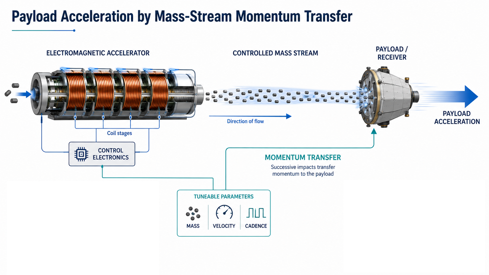
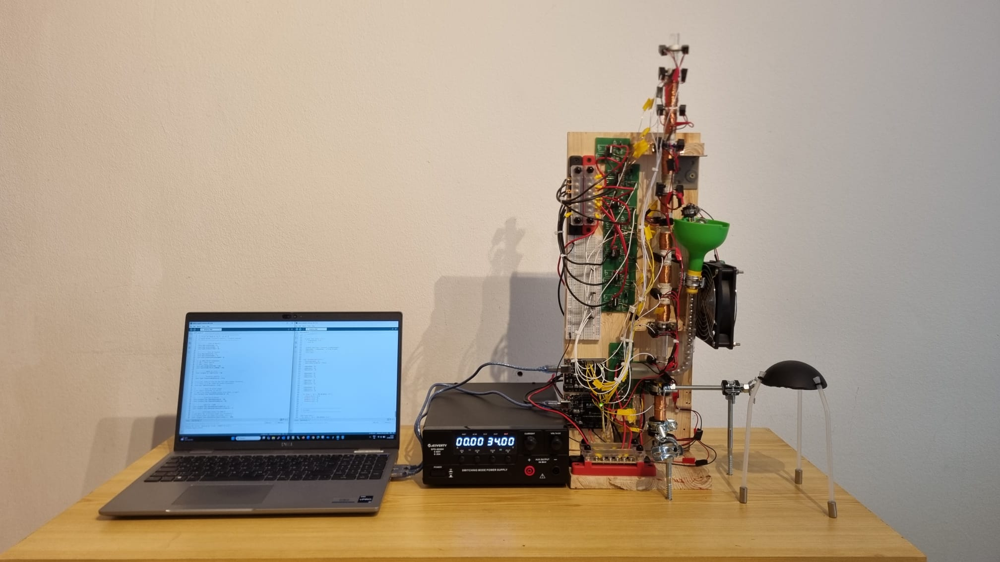
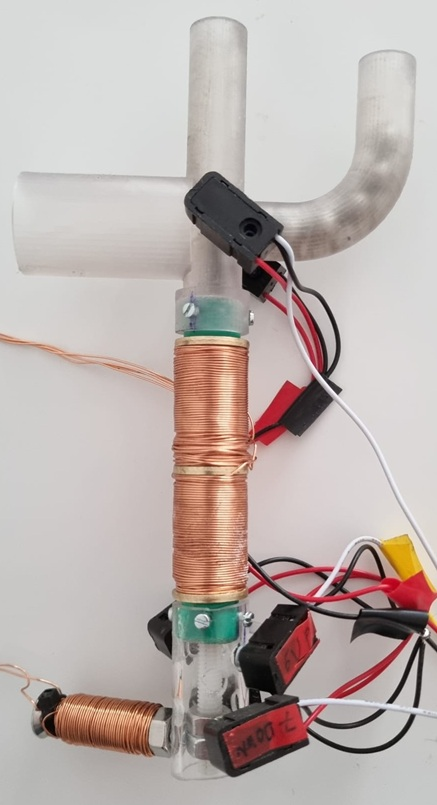
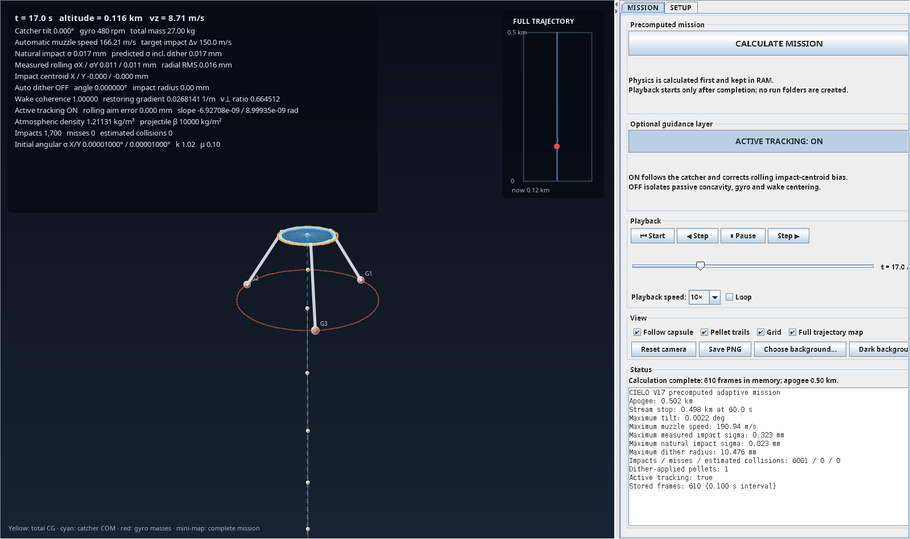
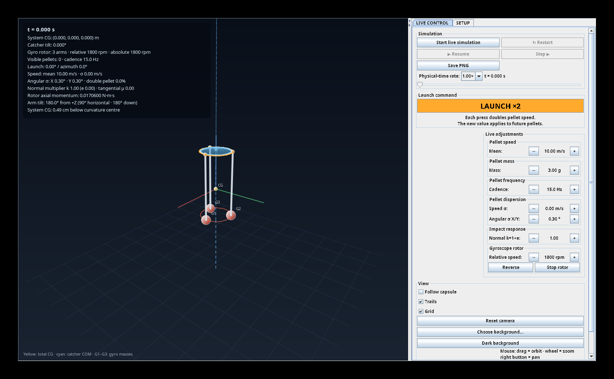

Mass
Sets the momentum contribution of each discrete mass and may be varied through defined mass families or geometry.
Project COELI investigates a space-transport architecture based on the external, progressive transfer of linear momentum. A fixed electromagnetic installation accelerates a controlled pellet stream whose repeated impacts generate a controllable average force on a separate receiver. Unlike rockets, the main energy source, power electronics and accelerator remain external; unlike single-impulse launchers, momentum delivery continues after the receiver is already moving. If scalable, this reusable architecture could reduce onboard mass and open a path towards lower-cost access to space.
Technical presentation
Concept
Each mass transfers linear momentum to a separate receiver. Successive impacts accumulate into a sustained force whose magnitude can be regulated through the mass of each projectile, its relative impact velocity and the cadence of the stream. The energy source, power electronics and accelerator remain in the external installation, allowing momentum delivery to continue while the receiver is already in motion.

Prototype & results

Existing prototype
The prototype verified the integrated operation of the main elements required by the architecture: pellet injection, sequential electromagnetic acceleration, power electronics, optical detection and timing, velocity measurement, repeated momentum transfer and stable levitation of the receiver. Integrated tests were typically operated at around 15 Hz, while the injector independently demonstrated stable operation at 20 Hz. The system therefore provided a complete laboratory-scale implementation of the functional chain, from controlled mass injection to momentum transfer at the receiver.

Prototype injector
In the concept used in the prototype, the projectiles advance to an intersection through a curved duct coupled to a vertical extension, forming a column of spherical projectiles approximately 20 cm high. A first sensor confirms that a projectile is loaded.
A vertical piston actuated by two coils performs an upward-and-return cycle. During the upward stroke, it drives the projectile into the output duct; during the return stroke, it resets the chamber for the next event. Two end-of-stroke sensors verify the upper and lower piston positions, allowing the control system to confirm that the cycle has been completed before authorizing the next projectile.
Projectile entry into the piston channel occurs by gravity. This configuration is one experimental implementation of the injection principle and is not intended as a final design.
Mass stream & momentum transfer
Each impact transfers an impulse to the receiver. Repetition converts the individual events into an average force governed principally by mass, relative impact speed and cadence. As the receiver accelerates, source cadence and impact cadence diverge, so the control system must adapt launch timing and mass speed while keeping relative impact velocity within the receiver’s structural and thermal envelope.
Sets the momentum contribution of each discrete mass and may be varied through defined mass families or geometry.
Determines impulse transfer and receiver loading. It must be distinguished from mass speed in the launcher reference frame.
Defines the rate at which the receiver encounters impulses and therefore contributes directly to average force.
Stability & stream tracking
The architecture distinguishes initial aiming from continuous tracking of the stream that actually reaches the receiver. The emitter only needs to establish an initial trajectory close enough for the receiver to encounter the stream. From that point, the relevant reference is not the predicted position of each individual mass, but the statistical centre of the arriving stream.
Passive receiver geometry can provide an initial restoring tendency when impacts occur away from the nominal axis. Rotational behaviour has also been explored in the 3D model, including off-centre impacts, torque and centre-of-gravity placement; the addition of gyroscopic stabilization produced stable behaviour under the simulated conditions examined.
A future implementation could extend this principle through active tracking. By estimating the stream axis from the spatial and temporal distribution of impacts, or from complementary sensors, the receiver could apply small continuous corrections and remain centred without requiring the launcher to achieve perfect long-range accuracy for every individual mass.

Simulation
A three-dimensional rigid-body model was developed to study the motion of the receiver under repeated impacts and to explore how the architecture behaves as its parameters change. The model represents gravity, translation and rotation of the receiver, off-centre impacts and the resulting torques, centre-of-gravity placement, restitution, tangential friction, projectile dispersion, atmospheric effects, approximate collisions, adaptive timing and candidate stabilization strategies including gyroscopic stabilization.
The simulator has been used to interpret the observed dynamics of the experimental receiver, compare stabilization strategies and identify the parameters that become increasingly important as the system scales. Quantitative correlation with future experiments will require measured distributions of stream dispersion, impact geometry and restitution, receiver vibration and deformation, thermal behaviour and wear, together with progressively more realistic representations of wind, yaw, ablation and fragmentation.
One longitudinal study examined a 27 kg system with a 1 m receiver, 20 g masses, a 100 Hz source cadence, a 2 km/s launch-speed ceiling and a 150 m/s relative-impact limit. Under the aerodynamic assumptions used in that study, the model produced an apogee of 34.28 km for one reference case and 79.65 km for an optimized case, showing the strong influence of aerodynamic performance once receiver stability is maintained.

Transitional channel
One hypothesis considered by COELI is that preceding masses may temporarily modify the surrounding flow and influence the trajectory of those that follow. A reduced model was therefore used to explore whether such a transitional channel could produce a lateral concentrating effect on subsequent masses. The study considered a stream operating at 200 m/s and 100 Hz and examined different assumptions for the persistence and decay of the disturbed flow.
At a distance of 500 m, the three assumed decay laws produced reductions in standard dispersion of 60.00%, 14.47% and 3.11% respectively. These results describe the behaviour of the reduced model under its assumed normalization and are intended to define an experimentally testable regime. The magnitude and persistence of the effect must ultimately be determined experimentally through measurements of projectile trains, deliberately offset pairs, dispersion, velocity loss and wake evolution.
Current technical challenges
The immediate programme must determine whether useful projectile speed can be repeated at operational cadence and whether angular dispersion can remain controllable as distance increases.
Raise repeatable pellet speed without losing timing control, efficiency, reliability or burst duration.
Quantify stream growth with distance and isolate the contribution of injection quality, geometry, correction and tracking.
Characterize switching, voltage drop, coil temperature, local energy storage, wear and verified safe discharge.
Measure transferred impulse, rebound, vibration, stability, heating, erosion and sensitivity to off-centre impacts.
Determine the later limits imposed by drag, attitude stability, ablation, fragmentation and high-Mach aerothermal loading.
Gate A · next experimental phase
Gate A is designed to move the concept from a founder-built laboratory demonstrator to a professionally engineered experimental platform. The integrated target is approximately 100 m/s, together with a 100 Hz injector operating in controlled short bursts and the instrumentation required to characterize the complete system.
This velocity is sufficient to force the main engineering questions that matter for subsequent scaling. For a 5 g reference mass, 100 m/s corresponds to 25 J of mechanical energy per shot; at 100 Hz, the instantaneous mechanical power during a burst reaches 2.5 kW. At realistic electromagnetic efficiencies, this moves the system into a regime where pulsed power, switching, thermal behaviour, timing accuracy, repeatability, containment and professional metrology must all be addressed quantitatively.
Centred, timed and measured short bursts with controlled projectile delivery.
Safe and repeatable integrated operation on a modular platform designed for later scaling.
Velocity, cadence, efficiency, angular dispersion, electrical behaviour and thermal response.
Impulse, rebound, vibration, receiver stability, heating and wear under repeated impacts.
Potential applications
These are candidate application domains rather than demonstrated services. Each would require a dedicated configuration, safety case and validation campaign.
Instrumented studies of repeated impact, catcher response, external force delivery and high-cadence mass acceleration.
Potential controlled access to the 50–90 km region for compact instruments, contingent on aerodynamic, safety and recovery validation.
External momentum transfer could supplement established launch architectures before independent orbital capability is considered.
Proposed infrastructure for progressive momentum delivery to receivers operating in orbital or interplanetary environments.
Potential transport architectures within the Solar System, considered only after terrestrial, atmospheric and orbital scaling have been demonstrated.
Intellectual property
The portfolio addresses specific implementations and subsystems. A filed application does not constitute grant, technical validation or confirmation of freedom to operate.
| Application | Filed | Scope described in the SPRIND submission | Status |
|---|---|---|---|
| U202630900 | 29 Apr 2026 | Cableless space elevator: continuous or quasi-continuous momentum transfer and stability | Under examination |
| U202630938 | 04 May 2026 | Distributed electromagnetic collimation of discrete-mass streams | Under examination |
| U202630967 | 08 May 2026 | Modular electromagnetic launcher for progressive pellet-stream momentum transfer | Under examination |
| U202630968 | 08 May 2026 | Transitional aerodynamic channel generated by sequential discrete masses | Under examination |
Founder / team
Founder · Technical Director
Astrophysicist and software engineer. He conceived the architecture, financed and built the demonstrator, developed the control software and 3D simulation framework, and conducted the preliminary experimental campaign.
Contact
Project COELI
Rafael Mario Sosa Brito
Founder / Technical Director